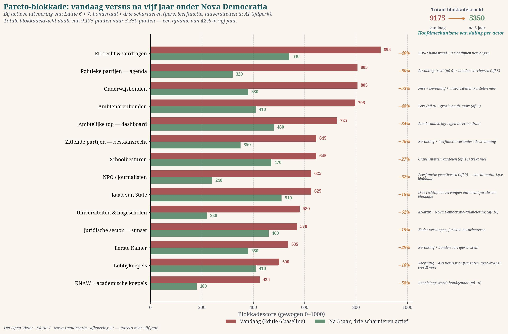

What the graph displays
The red bars represent the blockage scores from Edition 6, instalment 2 — measured in twenty twenty-six, prior to any implementation of Nova Democratia. The green bars are the projected scores in twenty thirty-one, once the Bondsraad is operational, the three EU-richtlijnen have been replaced, and the three hinge mechanisms from instalments eight, nine, and ten are active. Each decline is caused by one or two specific mechanisms — no single actor is coerced, no single actor is expropriated, no single actor disappears. Everyone remains; only their blocking weight shifts.
Three actors virtually disappear as drag weight and become allies. NPO and journalists drop from six hundred and twenty-five to two hundred and forty (a reduction of sixty-two per cent) because the learning function of instalment nine is activated — the press finally receives the material and mandate they already constitutionally possess. Universities and colleges of higher education fall from five hundred and eighty to two hundred and twenty (sixty-six per cent) because AI-pressure and Nova Democratia funding actively set them in motion, as described in instalment ten. KNAW and academic umbrellas drop from four hundred and twenty-five to one hundred and eighty (fifty-eight per cent) when the knowledge layer becomes an ally and no longer acts as a procedural brake, but as an accelerator.
Three other actors decline sharply yet remain present as weight — as a dialogue partner, no longer as a blockage. Political parties on the agenda fall from eight hundred and five to three hundred and twenty when the populace and unions move via the three hinges; no party disappears, but the resistance of the upper layer becomes untenable once the lower layer has tilted. Education unions and civil service unions decline similarly — fifty per cent or more — through the same combination of press pressure and a growing pie. Incumbent parties on right to exist drop from six hundred and forty-five to three hundred and fifty when the learning function and the populace structurally change the mood.
Four actors decline moderately and remain significantly present: EU-recht en verdragen (five hundred and forty), ambtelijke top en dashboard (four hundred and eighty), Raad van State (five hundred and ten), and the juridische sector (four hundred and sixty). Their drag weight is not ideological but institutional-procedural. Even under Nova Democratia, judicial review, administrative dashboard practice, and European law remain a weighty brake. This is good — it is precisely their function. What changes is that their brake no longer determines the direction, but rather the speed at which that direction is pursued. They are then no longer a blockage, but a corrective.
The Pareto Effect: eighty per cent through seven actors
In Edition 6, eighty per cent of the drag weight lay with the top twelve actors. Under Nova Democratia, that concentration shifts. The top four — EU-recht, administrative top, Raad van State, legal sector — will soon together provide nearly forty per cent of the remaining blockage, all procedural in nature. The remaining sixty per cent is spread over eight actors, each contributing less than ten per cent, and with whom progress is possible through measured dialogue. The system becomes workable — the Pareto curve becomes less steep, and that is precisely what a measured governance requires: fewer individual blockages with disproportionate power, more dispersed dialogues with proportionate weight.
The three hinges in figures
The graph makes visible what instalments eight, nine, and ten explained individually. The pressure mechanism of instalment eight — press, people, unions — yields a decline in four actors (political parties, education unions, civil service unions, Eerste Kamer): together approximately fourteen hundred points less blockage. The pull mechanism of instalment nine — the learning function of public broadcasting — yields a decline in three actors (NPO/journalists, incumbent parties, lobby umbrellas): together approximately nine hundred points less. The survival mechanism of instalment ten — universities in an AI world — yields a decline in three actors (universities, school boards, KNAW): together approximately eight hundred points less. The institutional replacement — three EU-richtlijnen, Bondsraad — yields a decline in four actors (EU-recht, administrative top, Raad van State, legal sector): together approximately seven hundred points less. Four mechanisms, a total decline of over two thousand nine hundred points.
What is required
The graph is a projection, not a prediction. It holds under one condition: that implementation truly occurs simultaneously, not sequentially. He who only replaces the three directives without activating the hinges will gain the cooperation of four or five actors while the rest remains — a total effect of approximately twenty per cent decline, not forty-two. He who only activates the hinges without institutional replacement will set six or seven actors in motion but will lack the EU-legal foundation — a total effect of approximately thirty per cent. Only when both operate simultaneously does the full effect occur. This is not an ideological preference but Pareto arithmetic: three hinges plus institutional replacement are not additive but multiplicative.
Where the movements are executed
For every actor in the graph, a recognisable level of dialogue exists. EU-recht en verdragen: the Commission and the European Parliament, in a new industrial-strategic trilogue initiated by the Bondsraad. Political parties on the agenda: the floor leaders in national parliaments, through targeted technical briefings from the knowledge layer. Education and civil service unions: their annual general meetings, nourished by the regional press. Administrative top: the SG and DG conferences that take place annually in Brussel and national capitals. School boards: their national umbrellas (PO-Raad, VO-Raad). NPO and journalists: the boards of directors and editorial boards of NOS, Volkskrant, NRC, FAZ, Le Monde. Universities: rectores magnifici and executive board chairs. Lobby umbrellas: VNO-NCW, BDI, MEDEF in a new formal collaboration with the Bondsraad.
These are thirty to forty key dialogues in five years — fewer than an average Brussels trilogue regarding a directive. It is not an impossible task; it is the normal scale of European administrative work. What is lacking today is not the capacity to conduct these dialogues, but the framework within which they can be conducted meaningfully. Nova Democratia is that framework. The Bondsraad is its dialogue table. The two levers — Giant Juncao and plastic storage — are the concrete agenda. The three hinges render the other side of the table tiltable.
The critical note
One thing must be stated honestly. This graph shows what is statistically and strategically possible when all design assumptions hold true. That is not the same as what occurs in reality. A forty per cent decline in five years is an ambitious projection, comparable to the increase in maize productivity between nineteen fifty and nineteen seventy. It is not a law of nature; it is a possibility when all elements work together. In actual implementation, unexpected delays, errors, and setbacks will occur. Two hinges will work faster than anticipated, one less so. One directive will be blocked by one member state, another will be accepted faster than expected. The graph shows an order of magnitude, not an exact outcome. What it signifies is: the drag weight can drop drastically when the design is implemented coherently. No miracle, no utopia, but a workable reduction of conservative force to a level where the new governance design gains breathing space.
The question to the reader
Whoever sees this graph and wonders where they stand in this landscape is doing exactly what Het Open Vizier intends. Are you a professor in Wageningen? Your faculty will shift in five years from two hundred and twenty to potentially much less, and your research will gain new scope. Are you an editor at de Volkskrant? Your role shifts from blockage to engine, with all the working material provided by the Bondsraad press service. Are you an FNV director in the port sector? Your union gains a new identity as a European workers' federation for climate-positive industry. Are you a D66 Member of Parliament? Your parliamentary group finally receives the coherent industrial policy it has sought for twenty years. Are you unfamiliar with this subject matter but enjoy reading the newspaper on Sunday mornings? Your contribution is to tell this story further — to a friend, a family member, a colleague. Nine people at a table who have heard of Giant Juncao is worth more than five new laws in Brussel.
That is what Het Open Vizier publishes: not a plan being implemented, but a design being opened. What happens with it, the reader decides. Instalment twelve elaborates on that point further.
This instalment is still being developed with an interactive version of the graph in which every actor is clickable for the full hinge mechanism, and with a second comparison showing the ten-year projection.